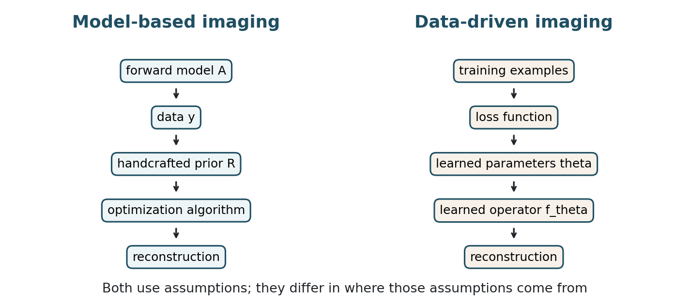
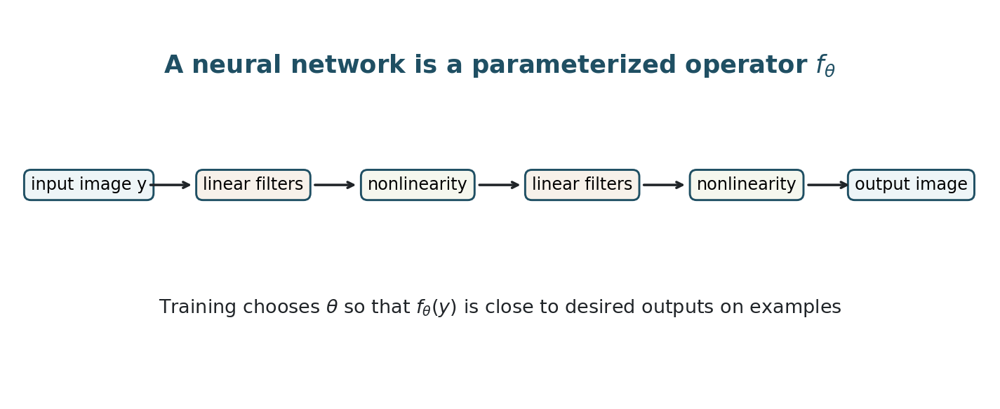
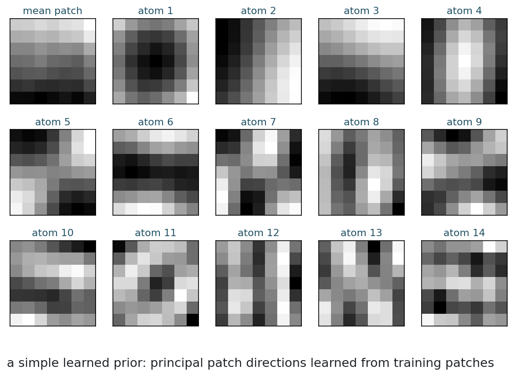
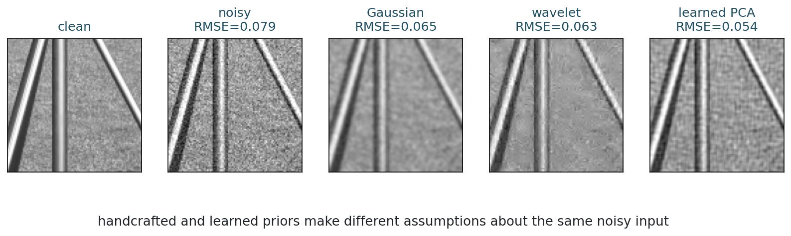
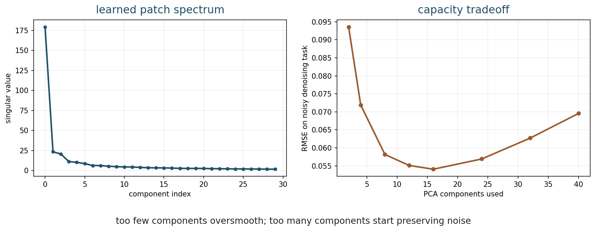
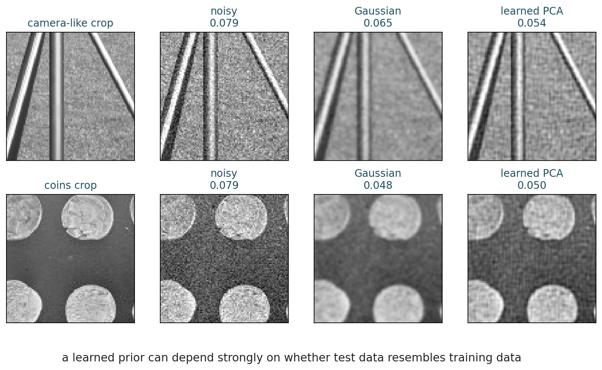

MATH 435: Mathematical Imaging - Week 12
2001-12-01
Where does prior knowledge come from?
Should an imaging algorithm use a prior we write down, or one it learns from examples?
| Time | Work |
|---|---|
| 0-8 min | recap: TV, sparsity, wavelets |
| 8-16 min | central identity and model-based pipeline |
| 16-32 min | data-driven imaging pipeline |
| 32-44 min | neural networks as learned operators |
| 44-60 min | learned patch prior example |
| 60-70 min | notebook activity |
| 70-75 min | synthesis and exit check |
Wavelets gave us a handcrafted representation.
We chose:
What if these choices were learned from data instead?
Neural imaging = inverse problems + learned image models.
The same questions remain:

Write the assumptions
Forward model plus prior
A classical reconstruction often solves
\hat{x} = \operatorname*{argmin}_x D(Ax,y)+\lambda R(x).
D is data fidelity; R is the regularizer or prior.
In a model-based method, we choose:
| Week | Model choice |
|---|---|
| 6 | Tikhonov: small energy or smoothness |
| 8 | TV: sparse gradients |
| 10 | l1: sparse coefficients |
| 11 | wavelets: sparse multiscale detail |
Model-based methods are often:
They can struggle when:
5 minutes
For each regularizer, name the image assumption:
Learn the assumptions
Training data plus loss
Instead of writing the reconstruction rule by hand, learn a function:
\hat{x}=f_\theta(y).
The parameters \theta are chosen from training data.
With training pairs (y_i,x_i):
\min_\theta \sum_i \ell(f_\theta(y_i),x_i).
The loss tells the network what counts as a good reconstruction on the training set.
Even data-driven methods require choices:
A learned method can encode image structure that is hard to write as a simple formula.
The prior is no longer a short expression like TV; it is represented by parameters learned from examples.
| Learned object | Role in the inverse problem |
|---|---|
| inverse map f_\theta(y) | direct reconstruction rule |
| prior R_\theta(x) | learned image preference |
| denoiser D_\theta(z) | implicit proximal-like step |
| representation \Phi_\theta(x) | learned coordinates |
| update rule G_\theta | learned algorithmic step |
Different neural methods learn different parts of the reconstruction story.
Data-driven methods can:
They can fail when:
Not magic, just parameterized maps
Input image to output image

At a high level, layers combine:
A composition of only linear layers is still linear.
Nonlinear activations allow the map to adapt to image content.
Why might a nonlinear reconstruction operator be useful for images?
Some methods ignore the explicit forward model:
\hat{x}=f_\theta(y).
Others include it:
x^{k+1} = \text{learned step using } A,\ A^\top,\ y.
Week 13 will study plug-and-play and learned regularization.
5 minutes
Classify each idea:
Learning without a big network
Patch PCA
We extract many clean image patches and learn common directions of variation.
This gives:

For each noisy patch:
This is not a neural network, but it is data-driven.


Too few components:
Too many components:

The learned prior was trained on one image family.
When the test image changes, the learned patch model may no longer be ideal.
Generalization is not a side issue; it is central to learned imaging.
Different risks, different strengths
No free reconstruction
| Question | Model-based | Data-driven |
|---|---|---|
| Prior comes from | formulas and modeling | examples and loss |
| Interpretability | usually higher | often lower |
| Data requirement | lower | higher |
| Physics | explicit | sometimes implicit |
| Failure mode | wrong model or prior | distribution shift or hallucination |
A learned method may produce a plausible image that is not supported by the data.
In medical or scientific imaging, why is plausible-but-false structure dangerous?
A learned reconstruction should be read with two verbs:
A good reconstruction needs both measurement support and relevant learned prior information.
Pixel RMSE is not enough.
We may also need:
Many modern methods combine both philosophies:
This is the doorway to plug-and-play and learned regularization.
From the repository root:
10 minutes
Open the Week 12 notebook.
Answer quickly:
| Question | Short answer |
|---|---|
| model-based | forward model, data term, prior, solver |
| data-driven | parameters from examples and a loss |
| neural operator | maps an input image to an output image |
| distribution shift | test data differs from training data |
Plug-and-play and learned regularization:
MATH 435: Mathematical Imaging